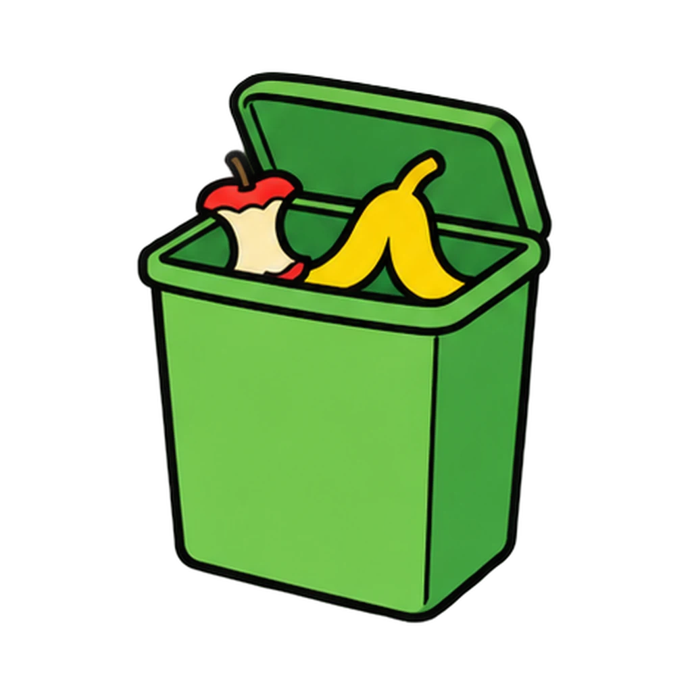
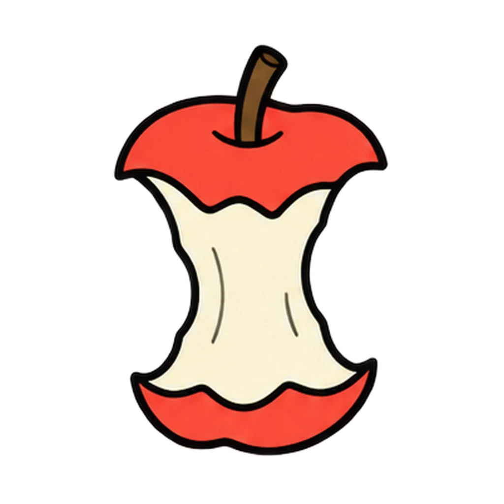
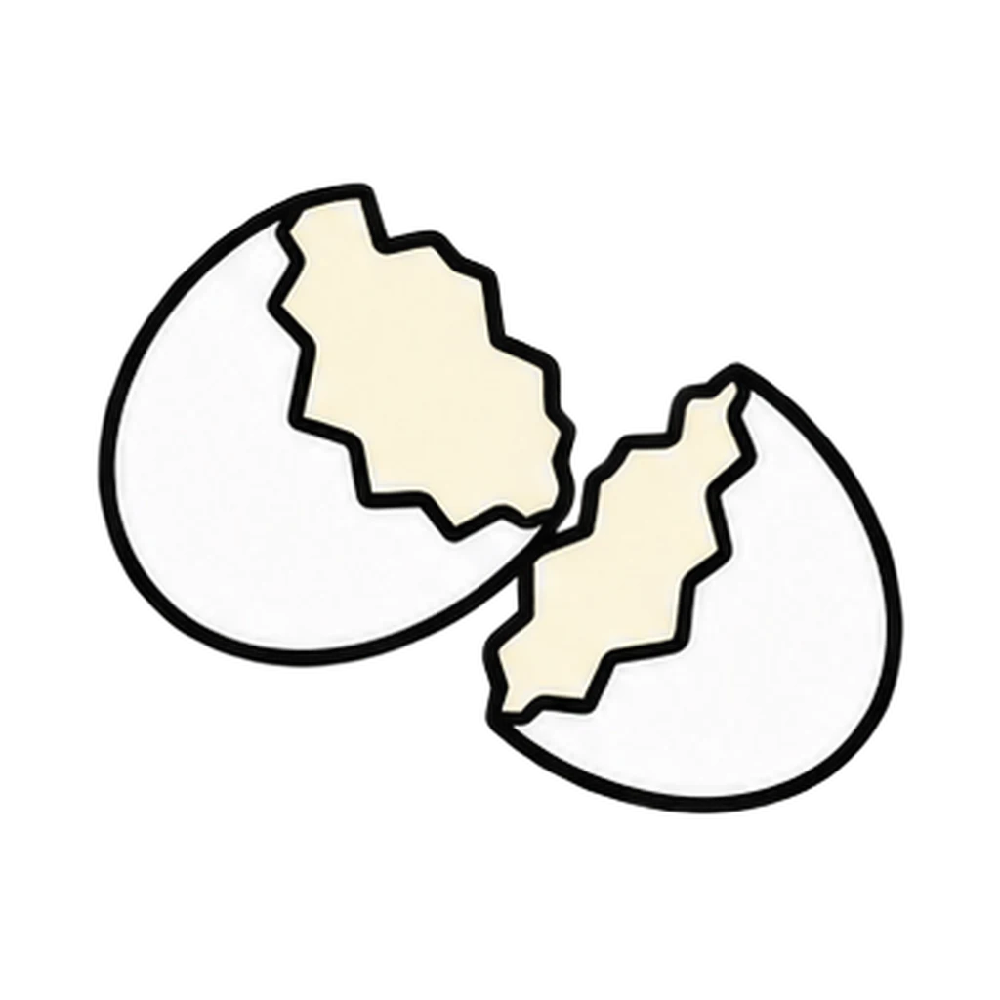
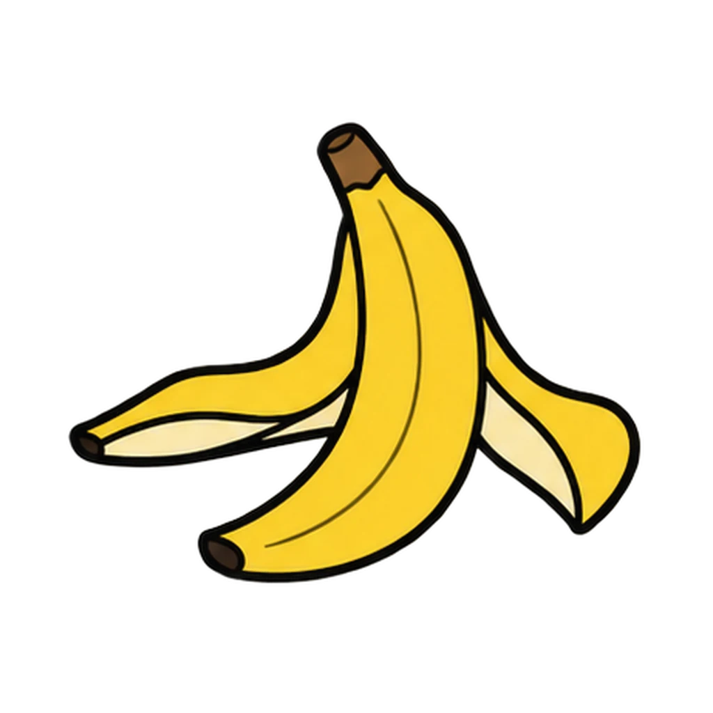
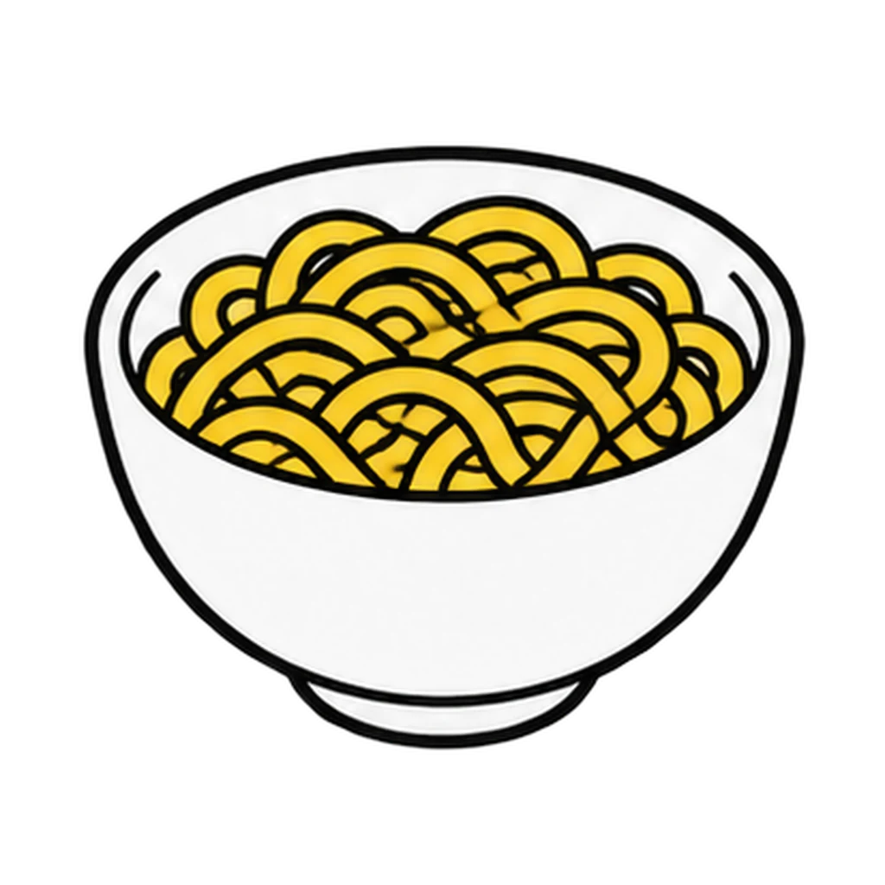
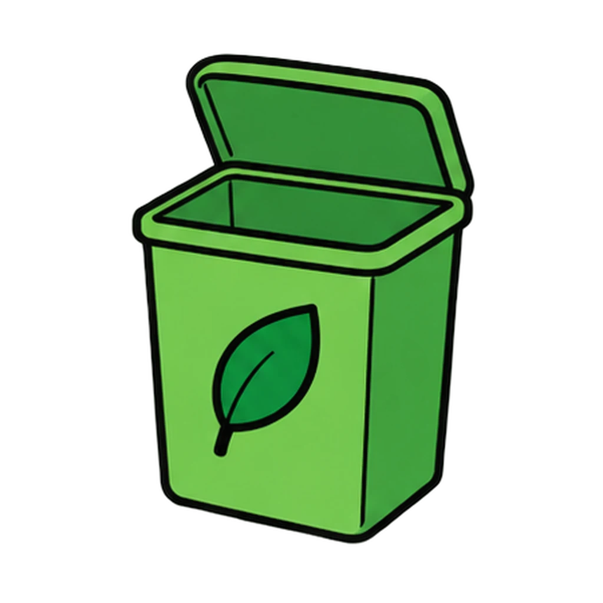
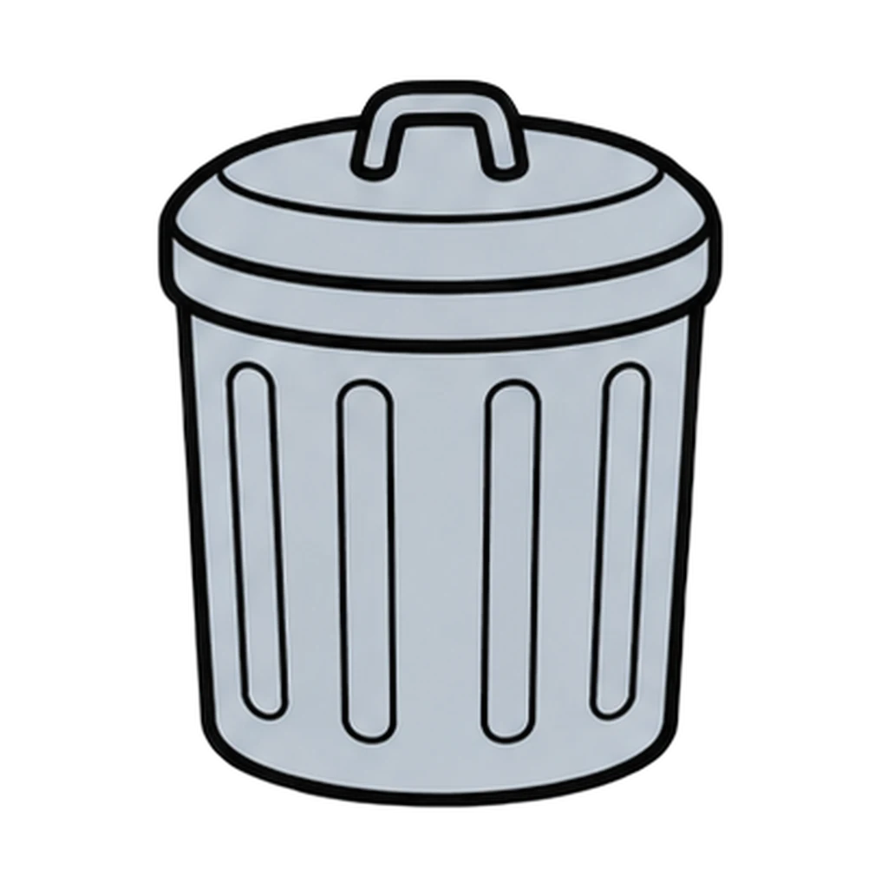

Reviews Lesson 6.5, Lesson 6.3. Reviews Lesson 6.5 Day 1 (the compost sort and the three farm methods from Handout 06.05) and Lesson 6.3 Step 1 (the four places waste happens from Handout 06.03). Play it as the Day 2 do now of Lesson 6.5 before the Food Systems Quiz, since Quiz items 8 to 10 are the sustainable methods matching, or again before the Unit 6 test. Round 1 is the ten cards the groups sorted; the paper towel and the slimy lettuce are the two the key says groups argue about, and the feedback keeps the condition on the paper towel. Round 2 keeps the class number out of it: it is the national picture, not who wasted what, which matches the handling note on the data sheet. A grade 6 class plays round 1 with eight cards, the key's stretch cards off.

Waste Not
A scrap card appears. Tap the COMPOST bin or the NOT COMPOST bin. Then a waste example appears, and you tap where it happens from four places, and you name a farm method from its description.
How to play






Done
The ones to study:
Worth knowing by heart:
- About a third of the food produced in this country is never eaten, and homes are the single biggest piece.
- The rule in one sentence: things that used to be a plant break down. Things that came from an animal, or have oil or grease on them, draw animals and turn sour instead of breaking down.
- Peels and cores were never going to be eaten, so they are not the number we are trying to change.